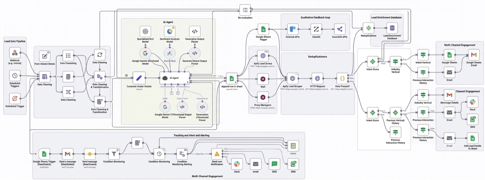

LeadForge AI
Traditional prospecting forces sales teams to spend hours identifying, researching, validating, and organizing potential customers before meaningful conversations even begin. LeadForge AI automates the entire discovery process, allowing teams to focus on selling rather than searching.

- Gemini
- Apify
- PhantomBuster
- Google Sheets
- n8n
- OpenAI
- CRM Automation
Why I Built This
Prospecting has always been one of the least scalable parts of outbound sales. Every campaign starts with manually defining target companies, identifying decision makers, validating contact information, and organizing data before outreach even begins.
The bottleneck wasn't outreach—it was building high-quality prospect lists consistently.
I wanted to remove repetitive research entirely by designing a system capable of understanding a business first, then autonomously identifying companies and people most likely to benefit from its solution.
The Approach
Instead of asking users to manually define search filters, the system first analyzed the business itself.
A Gemini-powered discovery layer extracted customer personas, industry segments, pain points, buying triggers, and ideal customer characteristics. These structured insights became search parameters for automated prospect discovery using multiple scraping and enrichment services.
Qualified leads passed through validation before being normalized into a CRM-ready structure, ensuring downstream outreach systems always received clean, standardized datasets.
Key Decisions
Rather than maximizing the number of leads collected, I optimized for relevance.
Poor-quality automation simply generates larger databases filled with unusable contacts. By emphasizing qualification before enrichment, the platform reduced downstream cleanup while improving campaign quality.
The architecture also separated customer understanding from data collection, making it easy to support new industries without redesigning the scraping infrastructure.
What I Learned
Automation creates value only when it improves decision quality.
Generating thousands of leads is meaningless if sales teams lose confidence in the data. Building trust through intelligent qualification proved far more valuable than maximizing volume.